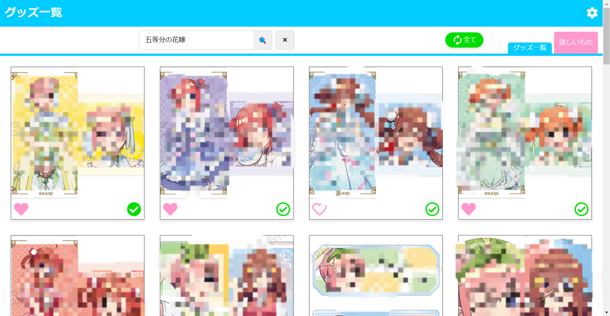
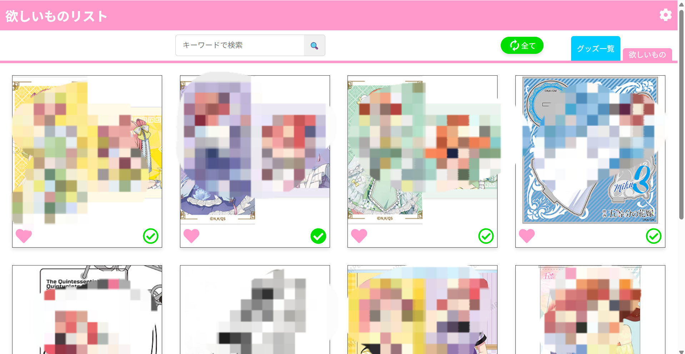

自己紹介
初めまして。名古屋市立大学大学院2年の八重代政弥です。大学ではバイオインフォマティクスを専攻しています。大学3年からプログラミングを独学で学び始め、趣味の二次元コンテンツをより快適に楽しめるよう、様々なツール作成に挑戦しています。将来的にはクリエイターの創作活動を支援することで、作品の魅力をより多くの人に届けられるようにしていきたいです。
取り組み
機械学習を用いたキャラクターイラスト分類ツールの作成
2025.4～日々SNSやサイトから収集してきた大量のキャラクターイラストを、機械学習を用いて絵師・キャラクターごとに自動分類するツールを開発しました。
スキル: Python, PyTorch, torchvision, PIL
特徴:
- 類似画像をクラスタリングし、教師データを半自動で作成
- UI上で分類結果を確認・修正可能
- 絵師ごとの特徴にも対応できるよう、転移学習とデータ拡張を実施
成果: 約99%以上の精度で自動分類可能です。イラストを探す利便性が大幅に向上しました。
グッズ管理Webアプリの作成
2024.4～販売（配布）されたキャラクターグッズを “図鑑のように” をコンセプトに一覧で作成しつつ、未所持品や欲しいものを一目で把握できる仕組みも取り入れた、推し活を便利にするアプリを作成しました。
スキル: Python, Selenium, ChromeDriver, JavaScript, HTML, Flask(テスト用), Jinja2
特徴:
- JANコードを持つ商品はSeleniumを用いて自動抽出、残りの限定商品等は手動でデータベースに入力
- ボタン操作1つで商品のステータス（入手済、未入手、欲しい）を変更でき、一目で把握できるUI
成果: 未所持のグッズの把握、所持しているグッズの記録、欲しいグッズの管理、新商品の把握、どれをとっても最高の使用感で、推し活がとても捗るようになりました。
 連絡先
Email: c247724@ed.nagoya-cu.ac.jp